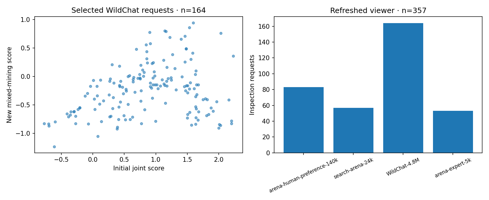

Open inspector · Download data · Reference probability audit
The new mixed-mining probe scores 48,009 eligible cached WildChat requests from completed historical mining and the exposed 10K development pool. The viewer contains 331 distinct groups, 357 requests and 653 original rollouts across four sources. All retained sources use the new checkpoint and newly fitted probability mappings. Original context and provisional labels remain available for review.

Selection combines the new-score tail, an initial-score comparison tail and prior provisional attempts or disagreements, with prefix diversity limits. Scores are inspection rankings, not confirmed jailbreak or response-success labels. The 15K reserved calibration/test requests were excluded; this inspection of development data supplies no independent FPR evidence.
Refresh producer: cfc7465484b7987d968e8b762edc8c044276d643. New probe SHA-256: 1adec7a8eea90fcf117dc3c80bafe6261bc6e2b97f788bfa4012e2e1739df9f9. Input/output hashes and source pins. Previous datasets remain immutable.